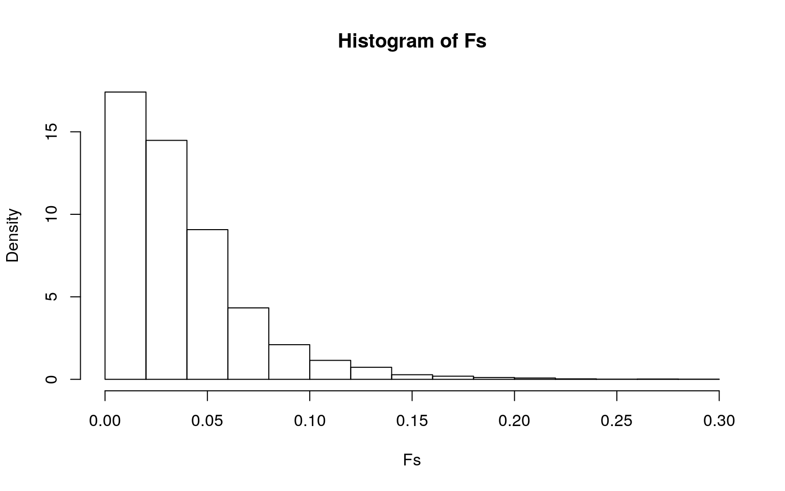
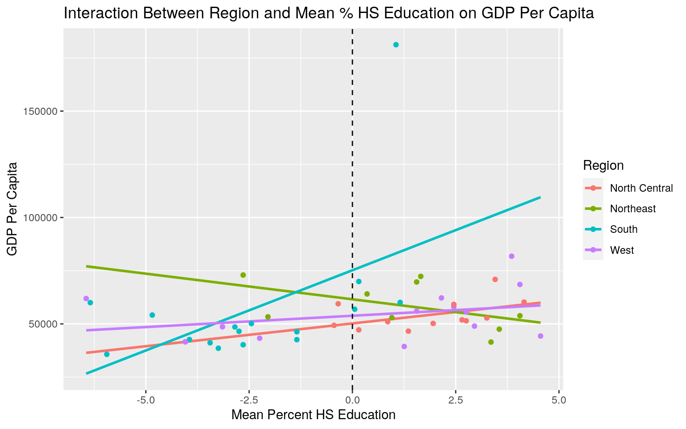
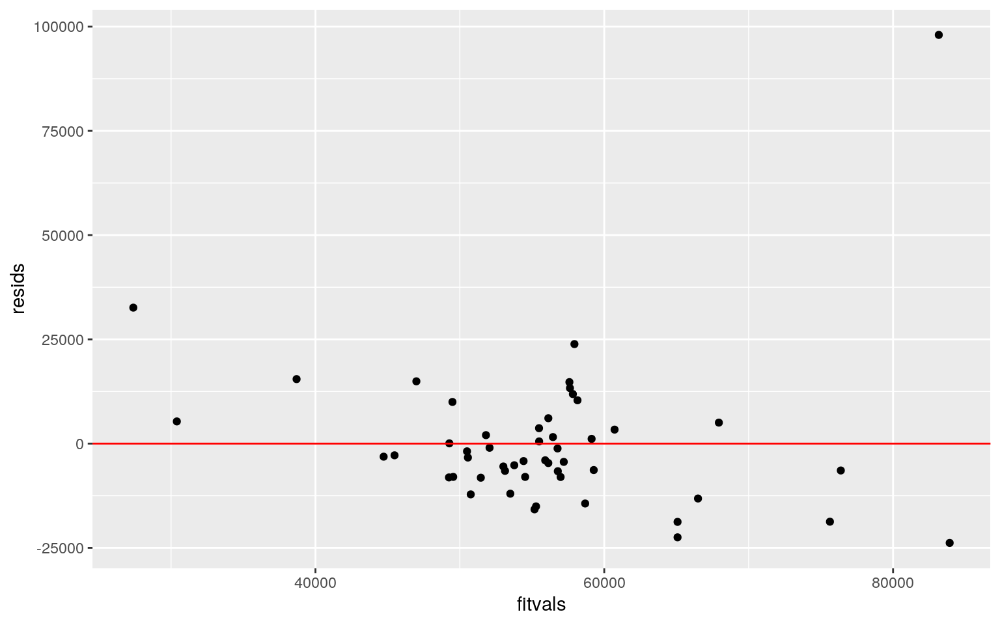
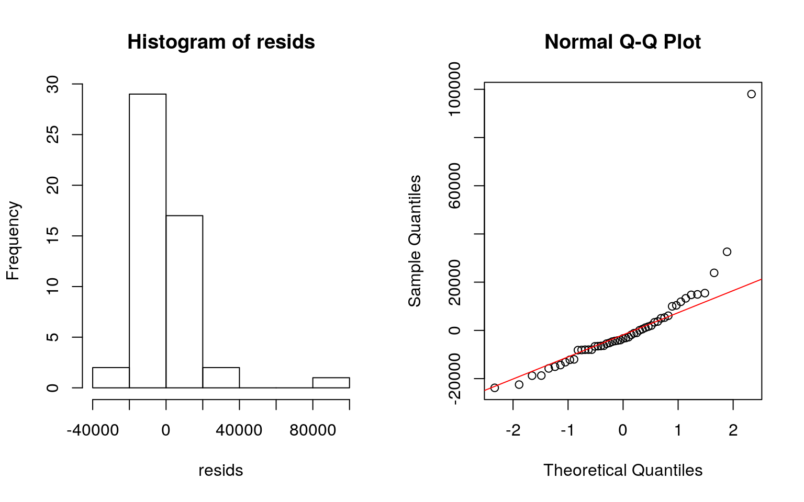
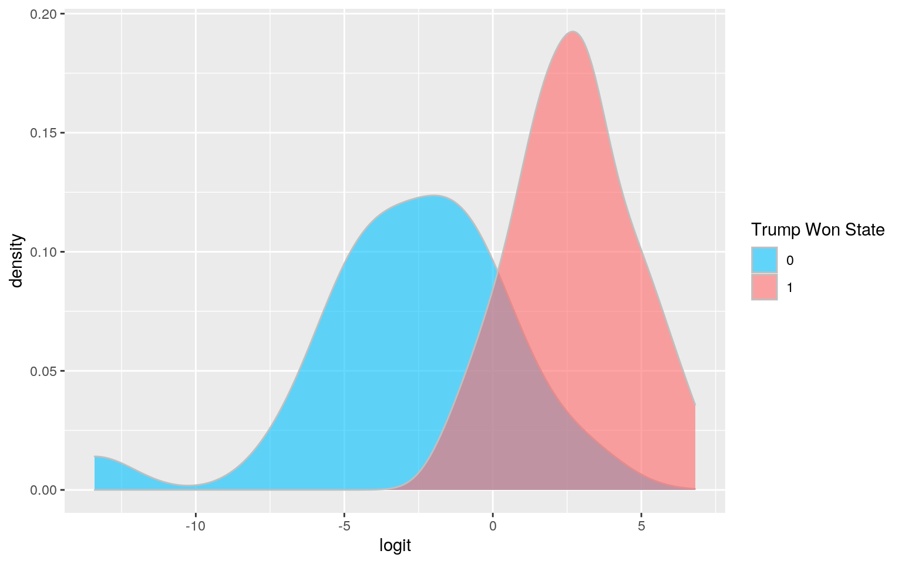
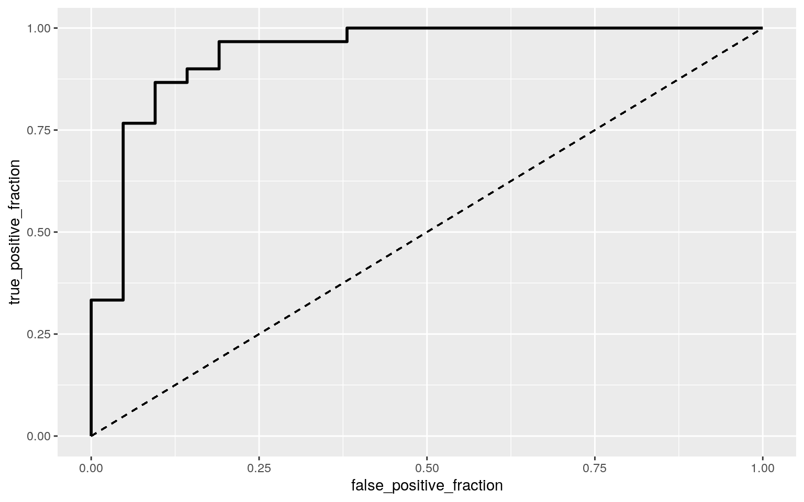

library(readr)
library(kableExtra)
election_turnout <- read_csv("election_turnout.csv",
col_types = cols(X1 = col_skip(), year = col_skip()))
election_turnout %>%
head() %>% kbl() %>%
kable_styling(bootstrap_options = c("striped", "hover", "responsive"))| state | region | division | turnoutho | perhsed | percoled | gdppercap | ss | trumpw |
|---|---|---|---|---|---|---|---|---|
| Alabama | South | East South Central | 59.0 | 84.3 | 23.5 | 42663 | 0 | 1 |
| Alaska | West | Pacific | 61.3 | 92.1 | 28.0 | 81801 | 0 | 1 |
| Arizona | West | Mountain | 55.0 | 86.0 | 27.5 | 43269 | 0 | 1 |
| Arkansas | South | West South Central | 52.8 | 84.8 | 21.1 | 41129 | 0 | 1 |
| California | West | Pacific | 56.7 | 81.8 | 31.4 | 61924 | 0 | 0 |
| Colorado | West | Mountain | 70.1 | 90.7 | 38.1 | 58009 | 1 | 0 |
My dataset looks at GDP per capita, high school and college gradution percentages, and voter turnout percent for every state (and the District of Columbia) in 2016, as well as what region it’s in, whether it’s a swing state, and whether Trump won the state vote (the main measurement of the data). There are 51 observations (the states + Washington DC).
library(rstatix)
library(kableExtra)
man1<-manova(cbind(turnoutho, perhsed, percoled, gdppercap)~region, data=election_turnout)
summary(man1) ## Df Pillai approx F num Df den Df Pr(>F)
## region 3 0.72423 3.6597 12 138 8.812e-05 ***
## Residuals 47
## ---
## Signif. codes: 0 '***' 0.001 '**' 0.01 '*' 0.05 '.' 0.1
' ' 1summary.aov(man1)## Response turnoutho :
## Df Sum Sq Mean Sq F value Pr(>F)
## region 3 341.89 113.962 3.5028 0.02247 *
## Residuals 47 1529.12 32.534
## ---
## Signif. codes: 0 '***' 0.001 '**' 0.01 '*' 0.05 '.' 0.1
' ' 1
##
## Response perhsed :
## Df Sum Sq Mean Sq F value Pr(>F)
## region 3 169.08 56.360 8.836 9.413e-05 ***
## Residuals 47 299.79 6.378
## ---
## Signif. codes: 0 '***' 0.001 '**' 0.01 '*' 0.05 '.' 0.1
' ' 1
##
## Response percoled :
## Df Sum Sq Mean Sq F value Pr(>F)
## region 3 273.93 91.311 2.7495 0.05314 .
## Residuals 47 1560.87 33.210
## ---
## Signif. codes: 0 '***' 0.001 '**' 0.01 '*' 0.05 '.' 0.1
' ' 1
##
## Response gdppercap :
## Df Sum Sq Mean Sq F value Pr(>F)
## region 3 1.2677e+08 42255312 0.0933 0.9633
## Residuals 47 2.1275e+10 452669510election_turnout %>% group_by(region) %>% summarize("Mean Percent Turnout" = mean(turnoutho),"Mean Percent HS Edu" = mean(perhsed), "Mean Percent College Edu" = mean(percoled), "Mean GDP Per Capita" = mean(gdppercap))%>%
kbl() %>% kable_styling(bootstrap_options = c("striped", "hover", "responsive"))| region | Mean Percent Turnout | Mean Percent HS Edu | Mean Percent College Edu | Mean GDP Per Capita |
|---|---|---|---|---|
| North Central | 63.31667 | 90.10000 | 28.30833 | 54198.83 |
| Northeast | 64.61111 | 89.44444 | 34.38889 | 58683.11 |
| South | 58.51176 | 85.72941 | 27.94118 | 56252.18 |
| West | 58.91538 | 88.99231 | 29.30769 | 54632.31 |
pairwise.t.test(election_turnout$turnoutho, election_turnout$region, p.adj="none")##
## Pairwise comparisons using t tests with pooled SD
##
## data: election_turnout$turnoutho and
election_turnout$region
##
## North Central Northeast South
## Northeast 0.609 - -
## South 0.030 0.013 -
## West 0.060 0.026 0.849
##
## P value adjustment method: nonepairwise.t.test(election_turnout$perhsed, election_turnout$region, p.adj="none")##
## Pairwise comparisons using t tests with pooled SD
##
## data: election_turnout$perhsed and
election_turnout$region
##
## North Central Northeast South
## Northeast 0.55892 - -
## South 3.3e-05 0.00084 -
## West 0.27883 0.68159 0.00101
##
## P value adjustment method: noneThe MANOVA came back significant, so I performed 4 univariate ANOVAs. I found that only the variables “turnoutho” and “perhsed” had significant mean differences across the groups, so I performed post-hoc t tests on these.
1-(.95^17) #probability of at least one type I error## [1] 0.5818797.05/17 #bonferroni α## [1] 0.002941176Overall, I performed 17 tests, so the probability of at least one Type I error was 0.5819, so I adjusted using bonferroni correction, and the new α was equal to 0.0029. After this correction, I found that the South differed significantly from the other 3 regions in “perhsed”. It’s pretty unlikely that the MANOVA assumptions for normal distribution and equal variance were met since the sample size for each region is quite small.
H0: With regards to whether Trump won the state or not (“trumpw”), the means of each region are equal HA: The means of each region are different
summary(aov(trumpw~region, data=election_turnout))## Df Sum Sq Mean Sq F value Pr(>F)
## region 3 3.508 1.1693 6.213 0.00121 **
## Residuals 47 8.845 0.1882
## ---
## Signif. codes: 0 '***' 0.001 '**' 0.01 '*' 0.05 '.' 0.1
' ' 1set.seed(1234)
obs_F <- 6.213
Fs <- replicate(5000,{
new <- election_turnout %>% mutate(trumpw=sample(trumpw))
SSW <- new %>% group_by(region) %>% summarize(SSW=sum((trumpw-mean(trumpw))^2)) %>%
summarize(sum(SSW)) %>% pull
SSB <- new %>% mutate(mean=mean(trumpw)) %>% group_by(region) %>%
mutate(groupmean=mean(trumpw)) %>% summarize(SSB=sum((mean-groupmean)^2)) %>%
summarize(sum(SSB))%>%pull
(SSB/487)/(SSW/273)
})
hist(Fs, prob=T); abline(v = obs_F, col="red",add=T)
mean(Fs>obs_F)## [1] 0The p-value is effectively 0, meaning none of the 5000 F statistics generated under the null hypothesis were bigger than the actual F statistic (6.213). Therfore, the null hypothesis can be rejected (i.e. the groups differ).
library(sandwich); library(lmtest)
election_turnout$perhsed_c <- election_turnout$perhsed - mean(election_turnout$perhsed)
projfit <- lm(gdppercap~region*perhsed_c, data = election_turnout)
summary(projfit)##
## Call:
## lm(formula = gdppercap ~ region * perhsed_c, data =
election_turnout)
##
## Residuals:
## Min 1Q Median 3Q Max
## -23824 -8003 -3349 4360 98018
##
## Coefficients:
## Estimate Std. Error t value Pr(>|t|)
## (Intercept) 50226 9012 5.573 1.52e-06 ***
## regionNortheast 11344 11620 0.976 0.3344
## regionSouth 24989 11526 2.168 0.0357 *
## regionWest 3612 10561 0.342 0.7340
## perhsed_c 2142 3809 0.562 0.5768
## regionNortheast:perhsed_c -4549 4785 -0.951 0.3471
## regionSouth:perhsed_c 5396 4378 1.232 0.2245
## regionWest:perhsed_c -1079 4127 -0.261 0.7950
## ---
## Signif. codes: 0 '***' 0.001 '**' 0.01 '*' 0.05 '.' 0.1
' ' 1
##
## Residual standard error: 19380 on 43 degrees of freedom
## Multiple R-squared: 0.2452, Adjusted R-squared: 0.1223
## F-statistic: 1.995 on 7 and 43 DF, p-value: 0.0779Intercept: 50226.4 is the mean/predicted GDP per capita for the North Central region at an average percent high school education. Controlling for percent high school education, GDP per capita in the Northeast region is $11,344 higher than in the North Central region on average. Controlling for percent high school education, GDP per capita in the South region is $24,989 higher than in the North Central region on average. Controlling for percent high school education, GDP per capita in the West region is $3,612 higher than in the North Central region on average. Controlling for region, GDP per capita rises by $2,141.6 for every 1% increase in high school education on average. The slope for percent high school education on GDP per capita is 4549 lower for the Northeast region compared to the North Central region. The slope for percent high school education on GDP per capita is 5396 higher for the South region compared to the North Central region. The slope for percent high school education on GDP per capita is 1079 lower for the West region compared to the North Central region.
ggplot(election_turnout, aes(perhsed_c,gdppercap, color = region)) +
geom_smooth(method = "lm", se = F, fullrange = T) +
geom_point() +
geom_vline(xintercept=0,lty=2) +
labs(x = "Mean Percent HS Education", y = "GDP Per Capita", title = "Interaction Between Region and Mean % HS Education on GDP Per Capita", color = "Region") Based on the adjusted r-squared of the model, proportionally about 0.1223 of the variance in the outcome is explained by the model.
resids <- projfit$residuals
fitvals <- projfit$fitted.values
ggplot() +
geom_point(aes(fitvals,resids)) +
geom_hline(yintercept=0, color='red')
par(mfrow=c(1,2)); hist(resids); qqnorm(resids); qqline(resids, col='red')
bptest(projfit)##
## studentized Breusch-Pagan test
##
## data: projfit
## BP = 11.078, df = 7, p-value = 0.1353coeftest(projfit, vcov = vcovHC(projfit))##
## t test of coefficients:
##
## Estimate Std. Error t value Pr(>|t|)
## (Intercept) 50226.4 3579.9 14.0301 < 2e-16 ***
## regionNortheast 11343.5 6228.4 1.8213 0.07553 .
## regionSouth 24988.6 22902.0 1.0911 0.28130
## regionWest 3611.8 5480.0 0.6591 0.51335
## perhsed_c 2141.6 1617.9 1.3237 0.19261
## regionNortheast:perhsed_c -4548.6 2472.7 -1.8395 0.07275
.
## regionSouth:perhsed_c 5396.3 6382.0 0.8455 0.40249
## regionWest:perhsed_c -1078.9 2233.3 -0.4831 0.63149
## ---
## Signif. codes: 0 '***' 0.001 '**' 0.01 '*' 0.05 '.' 0.1
' ' 1None of the results came back significant after the robust SEs (before, the South had a significant difference in GDP per capita). This means that region doesn’t significantly effect GDP per capita, and that the interaction between region and percent high school education is also not significant for GDP per capita.
projfit <- lm(gdppercap~region*perhsed_c, data = election_turnout)
resids<-projfit$residuals
fitted<-projfit$fitted.values
resid_resamp<-replicate(5000,{
new_resids<-sample(resids,replace=TRUE)
newdat<-election_turnout
newdat$new_y<-fitted+new_resids
projfitbs<-lm(new_y ~ region*perhsed_c, data = newdat)
coef(projfitbs)
})
resid_resamp%>%t%>%as.data.frame%>%summarize_all(sd)## (Intercept) regionNortheast regionSouth regionWest
perhsed_c regionNortheast:perhsed_c
## 1 8330.811 10734.55 10686.07 9837.625 3441.702 4367.852
## regionSouth:perhsed_c regionWest:perhsed_c
## 1 3993.44 3735.244Compared to the original SEs, the bootstrapped SEs were lower (but not by a whole lot), meaning the p-values would also be lower, but probably not enough to make them significant. Compared to the robust SEs, all of the bootstrapped SEs except for the South and the South interaction were higher (again, not by a whole lot), meaning p-values would be a bit higher for all but the two mentioned.
projfit2 <- glm(trumpw~region + percoled,data=election_turnout,family=binomial(link="logit"))
coeftest(projfit2)##
## z test of coefficients:
##
## Estimate Std. Error z value Pr(>|z|)
## (Intercept) 18.46279 5.81659 3.1742 0.001503 **
## regionNortheast -2.38233 1.55665 -1.5304 0.125912
## regionSouth -0.68558 1.43910 -0.4764 0.633795
## regionWest -2.08336 1.22311 -1.7033 0.088508 .
## percoled -0.57109 0.18838 -3.0317 0.002432 **
## ---
## Signif. codes: 0 '***' 0.001 '**' 0.01 '*' 0.05 '.' 0.1
' ' 1Controlling for percent college education, the Northeast and North Central regions are not significantly different. Controlling for percent college education, the South and North Central regions are not significantly different. Controlling for percent college education, the West and North Central regions are not significantly different.
exp(-0.57109)## [1] 0.5649094Controlling for region, for every 1% increase in college education, the odds of Trump winning change by a factor of 0.5649094.
probs<-predict(projfit2,type="response")
table(predict=as.numeric(probs>.5),truth=election_turnout$trumpw)%>%addmargins## truth
## predict 0 1 Sum
## 0 17 3 20
## 1 4 27 31
## Sum 21 30 51(17+27)/51 #accuracy## [1] 0.862745127/30 #sensitivity## [1] 0.917/21 #specificity## [1] 0.809523827/31 #precision## [1] 0.8709677library(plotROC)
ROCplot<-ggplot(election_turnout)+geom_roc(aes(d=trumpw,m=probs), n.cuts=0)+
geom_segment(aes(x=0,xend=1,y=0,yend=1),lty=2)
calc_auc(ROCplot)## PANEL group AUC
## 1 1 -1 0.9396825The model was ~86% accurate (0.8627451). The sensitivity, which is the probability of predicting trump winning if he actually won, was 0.9. The specificity, which is the probability of predicting trump losing if he actually lost, was 0.8095238. The precision, which is the proportion of predicted trump wins that were actually true, was 0.8709677. The AUC was 0.9396825, meaning the model performed quite well.
logit<-predict(projfit2,type="link")
election_turnout %>%
mutate(y=as.factor(trumpw)) %>%
ggplot(aes(logit, fill=y)) +
geom_density(alpha = 0.6, color = c("grey75")) +
labs(fill = "Trump Won State") +
scale_fill_manual(values = c("deepskyblue", "indianred1")) 
ROCplot
calc_auc(ROCplot)## PANEL group AUC
## 1 1 -1 0.9396825Again, the model performed really well, with an AUC of 0.9396825.
election_turnout_orig<- election_turnout[ , 4:9]
projfit3 <- glm(trumpw~.,data=election_turnout_orig,family="binomial")
coeftest(projfit3)##
## z test of coefficients:
##
## Estimate Std. Error z value Pr(>|z|)
## (Intercept) -7.2300e-01 1.3265e+01 -0.0545 0.956534
## turnoutho -2.9405e-02 8.4325e-02 -0.3487 0.727308
## perhsed 2.5532e-01 1.7261e-01 1.4792 0.139096
## percoled -6.6479e-01 2.0785e-01 -3.1984 0.001382 **
## gdppercap -4.3784e-06 5.3186e-05 -0.0823 0.934391
## ss 1.4668e-01 1.2548e+00 0.1169 0.906941
## ---
## Signif. codes: 0 '***' 0.001 '**' 0.01 '*' 0.05 '.' 0.1
' ' 1prob <- predict(projfit3,type="response")
class_diag<-function(prob,truth){
tab<-table(factor(prob>.5,levels=c("FALSE","TRUE")),truth)
acc=sum(diag(tab))/sum(tab)
sens=tab[2,2]/colSums(tab)[2]
spec=tab[1,1]/colSums(tab)[1]
ppv=tab[2,2]/rowSums(tab)[2]
if(is.numeric(truth)==FALSE & is.logical(truth)==FALSE) truth<-as.numeric(truth)-1
ord<-order(prob, decreasing=TRUE)
prob <- prob[ord]; truth <- truth[ord]
TPR=cumsum(truth)/max(1,sum(truth))
FPR=cumsum(!truth)/max(1,sum(!truth))
dup<-c(prob[-1]>=prob[-length(prob)], FALSE)
TPR<-c(0,TPR[!dup],1); FPR<-c(0,FPR[!dup],1)
n <- length(TPR)
auc<- sum( ((TPR[-1]+TPR[-n])/2) * (FPR[-1]-FPR[-n]) )
data.frame(acc,sens,spec,ppv,auc)
}
class_diag(prob,election_turnout_orig$trumpw)## acc sens spec ppv auc
## 1 0.8823529 0.9333333 0.8095238 0.875 0.9238095Using all the rest of the variables, the accuracy of the model is 0.8823529, the probability of Trump winning if he actually won is 0.9333333 (sensitivity), the probability of Trump losing if he actually lost is 0.8095238 (specificity), the proportion of predicted Trump wins that actually happened was 0.875 (PPV), and the AUC was 0.9238095, meaning the model performed really well.
set.seed(1234)
k=10
data<-election_turnout_orig[sample(nrow(election_turnout_orig)),]
folds<-cut(seq(1:nrow(data)),breaks=k,labels=F)
diags<-NULL
for(i in 1:k){
train<-data[folds!=i,]
test<-data[folds==i,]
truth<-test$trumpw
projfit_k<-glm(trumpw~.,data=train,family="binomial")
prob2<-predict(projfit_k,newdata = test,type="response")
diags<-rbind(diags,class_diag(prob2,truth))
}
summarize_all(diags,mean) ## acc sens spec ppv auc
## 1 0.8033333 0.8333333 0.825 0.8666667 0.8333333This time, all of the classification diagnostics were lower than the original except for specificity, meaning the out-of-sample metrics weren’t as good as the in-sample metrics.
library(glmnet)
y <- as.matrix(election_turnout_orig$trumpw)
x <- model.matrix(trumpw~ -1+., data=election_turnout_orig)
head(x); x<-scale(x) ## turnoutho perhsed percoled gdppercap ss
## 1 59.0 84.3 23.5 42663 0
## 2 61.3 92.1 28.0 81801 0
## 3 55.0 86.0 27.5 43269 0
## 4 52.8 84.8 21.1 41129 0
## 5 56.7 81.8 31.4 61924 0
## 6 70.1 90.7 38.1 58009 1cv <-cv.glmnet(x,y,family='binomial')
lasso<-glmnet(x,y,family='binomial',lambda=cv$lambda.1se)
coef(lasso)## 6 x 1 sparse Matrix of class "dgCMatrix"
## s0
## (Intercept) 0.3684107
## turnoutho .
## perhsed .
## percoled -1.0753833
## gdppercap .
## ss .Only the Percent College Education variable was retained after the LASSO.
lasso_dat <- election_turnout_orig %>%
select(percoled, trumpw)
k=7
data2<-lasso_dat[sample(nrow(lasso_dat)),]
folds<-cut(seq(1:nrow(data2)),breaks=k,labels=F)
diags<-NULL
for(i in 1:k){
train<-data2[folds!=i,]
test<-data2[folds==i,]
truth2<-test$trumpw
projfit_k2<-glm(trumpw~.,data=train,family="binomial")
prob3<-predict(projfit_k2,newdata = test,type="response")
diags<-rbind(diags,class_diag(prob3,truth2))
}
summarize_all(diags,mean) ## acc sens spec ppv auc
## 1 0.8622449 0.9234694 0.8047619 0.8714286 0.95Using only the “percoled”, the model had higher metrics except for PPV, and had a AUC of 0.952381, meaning overall it performed better than the logistic regression above.
…